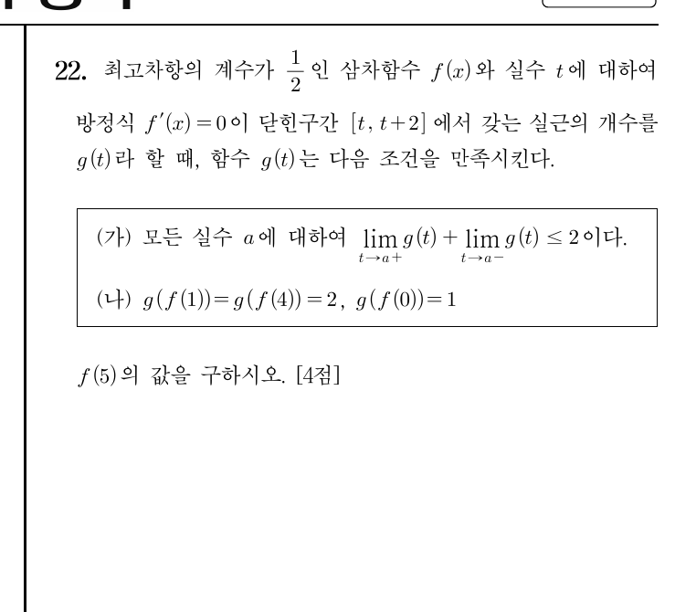

2022학년도 수능 공통 22번 · 단답형 4점 · 정답 9
아래가 실제 수능 문제지다. 조건을 있는 그대로 읽어보자.

* 원문제: 최고차항의 계수가 \(\frac12\)인 삼차함수 \(f(x)\)와 실수 \(t\)에 대하여 방정식 \(f'(x)=0\)이 닫힌구간 \([t,t+2]\)에서 갖는 실근의 개수를 \(g(t)\)라 할 때, 함수 \(g(t)\)는 다음 조건을 만족시킨다. (가) 모든 실수 \(a\)에 대하여 \(\displaystyle\lim_{t\to a^+}g(t)+\lim_{t\to a^-}g(t)\le 2\)이다. (나) \(g(f(1))=g(f(4))=2,\ g(f(0))=1\). \(f(5)\)의 값을 구하시오. [4점]
길이 \(2\)짜리 창문 \([t,t+2]\)를 좌우로 밀면서, 이차방정식 \(f'(x)=0\)의 근이 창문 안에 몇 개 들어오는지 센다. 조건 (가)는 "창문이 근 두 개를 한꺼번에 담는 순간이, 구간이 아니라 점 하나로만 일어나야 한다"는 뜻이다. 이 한 줄을 잡으면 문제는 그래프 놀이가 된다.
기호를 그림으로 번역하는 것부터.
\(f(x)\)는 삼차함수(최고차항 \(\frac12\))이므로, \(f'(x)\)는 위로 볼록한 이차함수다. 방정식 \(f'(x)=0\)의 실근을 \(\alpha \le \beta\)라 하자. (실근이 없을 수도, 중근 하나일 수도 있다.)
그러면 \(g(t)\)는 이렇게 읽힌다:
\(t\)가 움직이면 길이 \(2\)인 창문이 수직선 위를 미끄러지고, \(g(t)\)는 그 창문이 지금 담고 있는 근의 개수를 센다.
Q1. \(g(t)\)가 가질 수 있는 값은?
정답! \(f'(x)=0\)은 이차방정식이라 근이 최대 2개다. \(g(t)\)는 0, 1, 2 중 하나다.
다시 생각해보자. \(f'(x)=0\)은 몇 차 방정식인가? 근이 최대 몇 개인가?
슬라이더를 직접 움직여보자. \(t\)는 창문의 왼쪽 끝, \(d\)는 두 근 사이의 거리다.
창문 \([t,t+2]\) 안의 근의 개수 \(g(t) =\) 0
관찰 1 \(t\)를 천천히 움직여보자. 창문이 근을 하나씩 삼키고 뱉을 때마다 \(g(t)\)가 \(0\to1\to2\to1\to0\)으로 바뀐다.
관찰 2 \(d\)를 \(1.5\)로 줄이고 (가) 검사하기를 눌러보자. 어디에서 위반이 뜨는가? 그 지점이 바로 다음 STEP의 핵심이다.
조건 (가)는 점프 지점에서의 좌극한·우극한 이야기다.
\(g(t)=2\)가 되려면 창문 \([t,t+2]\) 안에 근 \(\alpha,\beta\)가 둘 다 들어와야 한다. 만약 두 근 사이 거리 \(\beta-\alpha\)가 \(2\)보다 작으면 어떻게 될까?
창문 길이가 \(2\)이므로, \(t\)가 구간 \([\beta-2,\ \alpha]\)에 있는 동안은 두 근이 항상 함께 들어온다. 즉 \(g(t)=2\)인 \(t\)가 구간으로 존재한다.
이 구간의 오른쪽 끝 \(t=\alpha\)를 보자.
합이 \(2+1=3>2\). 조건 (가) 위반! 따라서 \(\beta-\alpha<2\)는 불가능하다.
* 근이 1개 이하(중근 하나 또는 실근 없음)라면 \(g(t)\le 1\)이라 (가)는 자동으로 만족된다. 하지만 뒤에서 보듯 (나)가 \(g=2\)를 요구하므로, 결국 두 근이 정확히 거리 \(2\)여야 한다.
Q2. \(\beta-\alpha<2\)일 때 (가)를 위반하는 지점은?
정답! \(t=\alpha\)에서 좌극한 2, 우극한 1 → 합 3. 실험실에서 \(d=1.5\)로 검사하면 바로 확인된다.
실험실에서 \(d\)를 1.5로 하고 (가) 검사를 눌러보자. 어느 점에서 합이 3이 뜨는가?
(나)가 요구하는 "\(2\)"의 정체를 밝힌다.
(나)는 \(g(f(1))=2\)를 요구한다. 그런데 \(\beta-\alpha>2\)이면 창문 길이 \(2\) 안에 두 근이 절대 함께 못 들어오므로 \(g(t)\le 1\)이다. 모순. 따라서:
두 근이 정확히 \(2\)만큼 떨어져 있으면, 창문 \([t,t+2]\)가 두 근을 동시에 담는 경우는 \(t=\alpha\) 하나뿐이다. (\(t\le\alpha\)이고 \(\alpha+2\le t+2\)이려면 \(t=\alpha\).)
이제 (나)를 읽자: \(g(f(1))=2\)이므로 \(f(1)=\alpha\). 마찬가지로 \(g(f(4))=2\)이므로 \(f(4)=\alpha\).
Q3. \(\beta-\alpha=2\)일 때 \(g(t)=2\)인 \(t\)는?
정답! 창문이 두 근을 꽉 채워 담는 위치는 \(t=\alpha\) 하나뿐이다. 그래서 \(f(1)\)과 \(f(4)\)는 둘 다 \(\alpha\)와 같다.
창문 \([t,t+2]\) 안에 \(\alpha\)와 \(\alpha+2\)가 둘 다 들어오려면? \(t\le\alpha\)이면서 \(t\ge\alpha\)이어야 한다.
이제야 식을 전개한다. 그것도 이차방정식 하나.
\(f(x)=\frac12x^3+ax^2+bx+c\)라 두자. \(f'(x)=\frac32x^2+2ax+b\)의 두 근이 \(\alpha,\ \alpha+2\)이므로 근과 계수의 관계에서:
한편 \(f(4)=f(1)\)에서:
위 두 식을 대입하면 \(\alpha\)에 대한 이차방정식 \(\alpha^2-3\alpha+2=0\)을 얻는다.
마지막 조건 \(g(f(0))=1\)이 진짜를 가려낸다.
\(f(1)=\alpha\)를 이용하자.
Q4. \(\alpha=2\)가 탈락하는 결정적 이유는?
정답! \(\alpha=2\)도 \(f(4)=f(1)\)은 만족하지만, \(c=-6\)이 되면 \(g(f(0))=g(-6)=0\)이라 (나)의 마지막 조각이 깨진다.
\(\alpha=2\)일 때 \(c\)를 구해보고, \(g(c)\)가 정말 1인지 창문으로 확인해보자.
\(f(x)=\frac12x^3-3x^2+\frac92x-1\)이 확정됐다. 구하는 것은 \(f(5)\):
정답 9